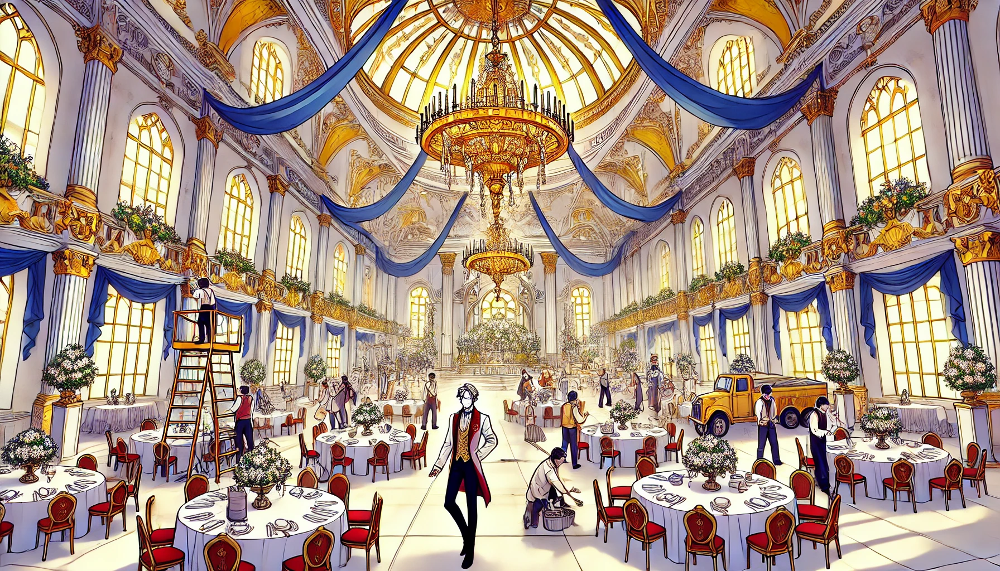

Everyone in the castle was busy preparing for the upcoming debut, which was set to take place one and a half months from today. Boutiques were fully booked with pre-reservations, and this event was not only significant for Quilientia’s heir but also for all the bachelors from various empires who had been invited. It was a prime opportunity to find ideal marriage prospects and form new family alliances. Saintana, as usual, was occupied with administrative work, meetings with key figures, and overseeing the knight order’s training for castle security during the banquet. Additionally, she had to ensure that bandits were cleared out before they could threaten travelers making their way to the capital.
Amidst the chaos of preparations, she made a mistake she never would have allowed under normal circumstances—she left her diary on her desk.
With so much on her mind, it had slipped her attention.
That evening, Deaus sought her out to discuss the debut preparations, as he was overseeing the cultural and traditional aspects of the event. However, after searching in all the usual places, he was unable to find her. He never would have guessed that she was in the stables, talking to the horses—a pastime that seemed to bring her peace in moments of distress.
Unaware of the unwritten rule that n o one was to enter her chambers without permission—except for her maid—Deaus decided to check there. Finding no guards outside, he knocked. When there was no response, he entered shamelessly, concerned that something might be troubling her. He may be the only one in that castle to think that something can trouble her.
Curiosity got the better of him as he took in his surroundings. He had never been inside Saintana’s private quarters before.
The room was meticulously kept, yet it carried a sense of solitude—a place where a ruler rested but never truly lived.
Then, his eyes fell upon a book lying open on the desk.
A diary?
At first, he thought it might be a novel, and chuckled to think that great Saintana also into things like that, but the moment he flipped through the pages and saw the handwritten entries, he realized it was Saintana’s personal journal.
And he made an even greater mistake —he started reading.
The first entry was from ten years ago.
His breath hitched as he read:
"I was lonely for a very long time. How many years has it been now? Maybe more than 2,000, if I count all my lives. I always died young, without love. Everyone used me for my knowledge and skills, or they expected me to understand them without ever considering my feelings. To them, I was someone who needed no one to rely on, someone different from the rest. But all I ever wanted was to live a normal life—just once."
Milli.
That name appeared in the diary, and Deaus felt an odd unease settling in his chest.
"It was in my new life as Milli that things changed. I was living peacefully alone in an abandoned mountain when a young boy, around fourteen, arrived, terrified and desperate. He looked as if he was being chased. His golden-blond hair was beautiful—though a common color in that world, his hair had a brilliance that set it apart. He begged for help before collapsing unconscious. At first, I was irritated. Someone had intruded on my solitude. But… I couldn’t ignore him. I took him in, tended to his wounds, and gave him medicinal herbs from my own supply. He was adorable, in a way. It was the first time in ages that I had softened toward someone."
Deaus's fingers trembled slightly as he turned the page. It was like he was seeing something he should not have.
"He woke up and thanked me, as expected. But he never left. Strangely, I wasn’t bothered by it. I didn’t know why, but his presence filled my lonely days with laughter. He was one year younger than me, so I couldn’t help but treat him like a child. But maybe… he thought of me differently."
Deaus's heart pounded.
"He never seemed surprised by my skills or knowledge. Instead of admiring or envying them, he wanted to learn from me. He knew something troubled me, yet he never treated me like someone untouchable. For once… someone saw me as human."
The next words made Deaus freeze.
"Now, four years had passed. He used to call me ‘My Milli’ in the most endearing way. He treated me like an ordinary girl, not just someone to be respected. I knew he had feelings for me, but I always ignored them. And then, one day, he finally proposed. We ran through the fields, laughing together, when he said—"
My Milli! Let’s live like this forever.
A chill ran down Deaus’s spine.
"I was happy. I hugged him tightly. But all of a sudden, there was an explosion. Fire—unnatural and uncontrollable. A burning tree trunk fell between us, separating us. I struggled, injured, searching for him. But I failed. I couldn’t leave the mountain—I couldn’t abandon him. I dived into the river, my last hope of finding him. But in the end… I couldn’t."
old Tear stains mark were on the page.
"I ended up in Saintara, alone once again. I pretended to have lost my memory and took on the name Saintana. My life became meaningless again."
The final words struck Deaus like a bolt of lightning.
"He betrayed me, didn’t he? He promised… and then vanished into thin air."
"If he is dead, I don’t know what to feel anymore."
"If he is alive… why didn’t he search for me? Was that proposal just empty words?"
More old tear stains.
Deaus’s breath caught in his throat. His hands clenched the edges of the diary. His mind was racing.
"People only fear those who are above them," he read. "What they can’t achieve becomes a curse in their eyes."
Why did these words feel so painfully familiar?
Deaus’s heart nearly stopped.
No—they weren’t his words.
He had once spoken those words to Saintana, but they weren’t originally his. He had learned them from his tutor back in Quilientia.
His grip on the diary tightened. A terrible realization began to take shape.
Just as he was about to turn another page—
Thump.
His body stiffened. The air turned suffocating.
Slowly, he looked up.
Saintana stood at the door.
Her expression was unreadable.
But her eyes—her eyes burned with a fury that could crush entire empires.
Deaus felt the overwhelming pressure of her aura—the kind of force that could obliterate anything in its path.
At that moment, he knew.
This was it.
The woman before him wasn’t just Saintana, the leader of Saintara.
She was a ghost of the past, a ruler of the present, and a storm that could consume everything in her way.
And he had just crossed a line he should never have touched.